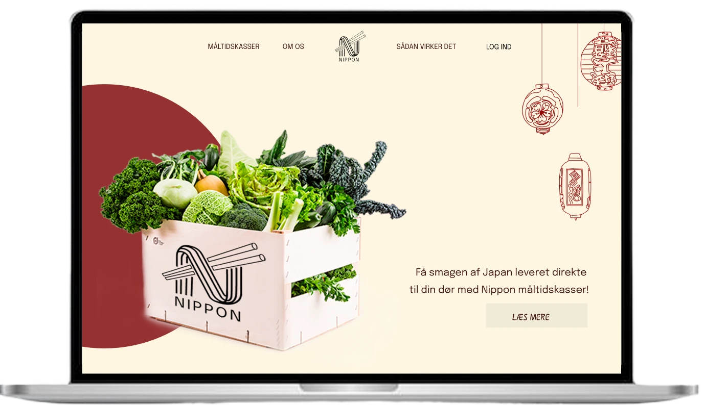

PROJEKT NO. 1
Nippon
Løsning: brugeroptimeret interaktiv hjemmeside til desktop.
Case
Vi fik til opgave, at udarbejde en digital løsning til Nippon - et brand inspireret af japansk kultur,
der tilbyder japanske måltidskasser. Fokus var at skabe en brugervenlig og intuitiv hjemmeside, der tilgodeser brugerens behov.
Værktøjer